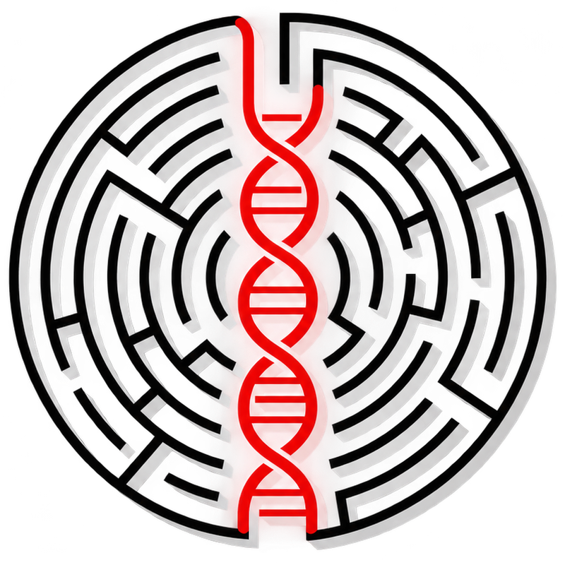

D2I 2027 · Data-to-Information competitions

Arianna’sThread
Compact, reliable and fast DNA similarity search.
In 2027 the D2I competitions share one theme. Each of three venues hosts one task, and the three tasks together make up the full challenge. This site is the central hub for all of them: tasks, dates, registration and leaderboards will be posted here.
- Apr 5–8 IEEE ITW 2027 · Munich
- Jun 20–25 ESIT 2027 · Ankara
- Jun 27 – Jul 2 IEEE ISIT 2027 · Sorrento
IEEE Information Theory Society
The problem
Find the closest matches to a noisy DNA read
Given a DNA fragment with errors, return its closest matches from a large reference collection, while storing as few bits per reference sequence as possible.
How the 2027 competition works
Three tasks, one per venue
The tasks are the three stages of one retrieval pipeline.
-
Task 1
Represent and compress
Map each DNA fragment to a short binary code: an embedding that approximates edit distance, followed by quantization.
Scored onbits per fragment against retrieval accuracy
-
Task 2
Search
Build an index over the coded reference collection, return candidates for each query and rerank them by exact edit distance.
Scored onrecall, queries per second and memory
-
Task 3
Accelerate
Speed up the complete retrieval pipeline on a fixed GPU, from input sequences to verified results.
Scored onthroughput at matched recall and memory
-
One task per venue
Each venue runs one of the three tasks. Which task goes to which venue will be announced soon.
-
Enter one, two or all three
There is no need to take part in every task. We provide baseline components, so each task can be done on its own.
-
A leaderboard per venue
Each venue has its own leaderboard and its own recognition for the top teams. Prizes and publication options are still being arranged.
-
Overall leaderboard
If several teams complete all three tasks, we will also publish an overall leaderboard across the venues.
The information theory question
How many bits must we keep to retrieve a sequence reliably?
We treat DNA representation as a rate–distortion problem with edit distance as the distortion measure. Embeddings map edit distance approximately to Euclidean distance, and source coding turns them into compact codes, with trellis-coded quantization as a baseline. The goal is to find the right answer, not to reconstruct the input. Work on compression for similarity identification is a starting point.[3]
- FirstBits per sequence against successful retrieval
- ThenTotal memory and speed
- SeparatelyEmbedding distortion, DNA reconstruction error and retrieval reliability
- OptionalExact reconstruction of the sequence
Why DNA search
Public sequence archives are large enough that searching them efficiently is a research problem in itself.
Previous editions
D2I since 2023
- 2026 ESIT 2026 Charting the Path to Bifröst WebsiteIEEE BITS article
- 2026 IEEE ISIT 2026 The Still Mirror Website
- 2025 IEEE ISIT 2025 Wireless Wanderlust WebsiteKaggle
- 2024 IEEE ISIT 2024 Bits & Bots KaggleIEEE BITS article
- 2023 IEEE ISIT 2023 DeepVerse 6G Machine Learning Challenge IEEE DataPort
Articles in IEEE BITS, the Information Theory Magazine
Get involved
Participate, volunteer or sponsor
- Participate
- Students and researchers in information theory, machine learning, bioinformatics and systems. Registration opens per venue.
- Volunteer
- Help with baselines, evaluation and mentoring.
- Sponsor
- Prizes, compute access, student support or technical mentors, with the chance to meet participants and recruit.
Organizers
- Khac-Hoang Ngokhac-hoang.ngo@liu.se
- Alejandro Lancho Serranoalancho@ing.uc3m.es
- Stefano Rinirini.stefano@gmail.com
References
- Karasikov et al. Efficient and accurate search in petabase-scale sequence repositories. Nature (2025).
- Edgar et al. Petabase-scale sequence alignment catalyses viral discovery. Nature (2022).
- Ingber & Weissman. The minimal compression rate for similarity identification. arXiv:1312.2063 (2013).